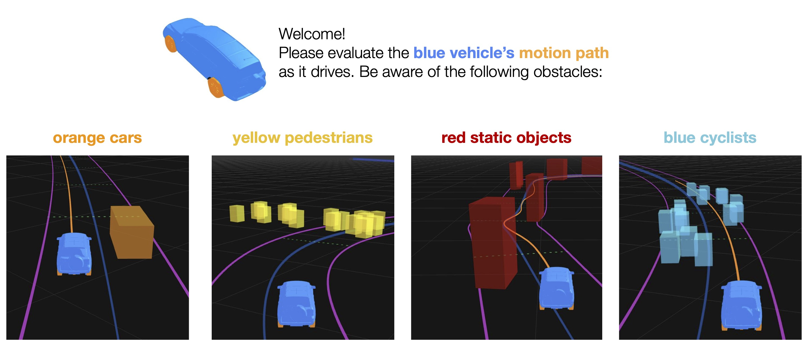

<!DOCTYPE html>
<html>
<head>
  <title>Rating Motion Plans</title>
  <script src="jsPsych-lite/jspsych.js"></script>
  <script src="jsPsych-lite/plugins/jspsych-custom-video-form-inputs.js"></script>
  <script src="jsPsych-lite/plugins/jspsych-survey-text.js"></script>
  <link rel="stylesheet" href="jsPsych-lite/css/perceptive-csa.css"></link>
  <style>
    img {
      width: 800px;
    }
    /* Chrome, Safari, Edge, Opera */
    input::-webkit-outer-spin-button,
    input::-webkit-inner-spin-button {
      -webkit-appearance: none;
      margin: 0;
    }

    /* Firefox */
    input[type=number] {
      -moz-appearance: textfield;
    }
  </style>
</head>
<body></body>


<script>

  const colors = ["rgb(50,168,82)"]//, "rgb(158, 24, 24)", "rgb(18, 73, 201)","rgb(241, 135, 11)","rgb(113, 9, 166)"] // green, red, blue, yellow
  const annotation_opts = ['good']//,'comfortable','safe','efficient','lawful']

  const file_path = 'test_stims/';
  const num_stim = 2;
  const start_stim = parseInt(prompt('Complete '+String(num_stim)+' annotations, starting with config #: ','1'),10)
  //const stimuli = ['config1.webm']//['example1.m4v']//,'example2.m4v']
  var timeline = []


   // check subject's understanding of intstructions
   var user_id_trial = {
        type: 'survey-text',
        preamble: '<div></div>',
        questions: [
            { prompt: "User Name: ", name: 'user_id'}//, placeholder: "City, State/Province, Country" }
            ],
        on_finish: function(data){
            var id = JSON.parse(data.responses).user_id.toLowerCase();
            //console.log(id)
            jsPsych.data.addProperties({user: id});
            },
    };
timeline.push(user_id_trial);


  // can add trials for each annotation_opt
  for (var opt = 0; opt < annotation_opts.length; opt++) {
    for (var n = start_stim; n < num_stim+start_stim; n++){

        var trial = {
            type: 'custom-video-form-inputs',
            width: 1000,
            //stimulus: file_path + 'example' + n +'.m4v',
            config_num: n,
            stimulus: file_path +n +'.webm',
            prompt: 'How <span style="font-weight:bold; color:'+colors[opt]+'">'+
                    annotation_opts[opt] +' </span> is this motion path?',
            form_html: '<label for="'+annotation_opts[opt] +'" style="font-size:12px"> Rating from 1 (worst) to 100 (best): </label>' +
            '<input type="number" id="response" name="'+annotation_opts[opt] +'" min="1" max="100" style="width:50px">',
            delay_form: false,
            submit_keys: ['return','space'],
            question_type: annotation_opts[opt]
        }
        timeline.push(trial);
    }
}


    function link_data(json){
      var div_element = document.querySelector('div');
      var link = document.createElement('a');
      link.setAttribute('style','text-align: center; padding: 200px 600px;')
      var blob = new Blob([json], {type: "application/json"});
      var url  = URL.createObjectURL(blob);

      link.setAttribute('download', 'annotations_' + String(start_stim) + 'to'+ String(start_stim+num_stim-1) +'.json');
      link.href = url;
      link.innerHTML = '<div"> data link - right-click to save. </div>';

      div_element.appendChild(link);
      div_element.addEventListener('click', function (){
        // wait for the link to be added to the document
        window.requestAnimationFrame(function (){
        var event = new MouseEvent('click');
        div_element.removeChild(link);
        });
      }, false);
    }


  jsPsych.init({
    timeline: timeline,
    on_finish: function () {
        var relevant_data = jsPsych.data.get().filter({trial_type: 'custom-video-form-inputs'});
        //jsPsych.data.displayData('json');
        var json = relevant_data.json();
        //console.log(json)
        link_data(json)
      },
    default_iti: 250
  });
</script>

</html>
